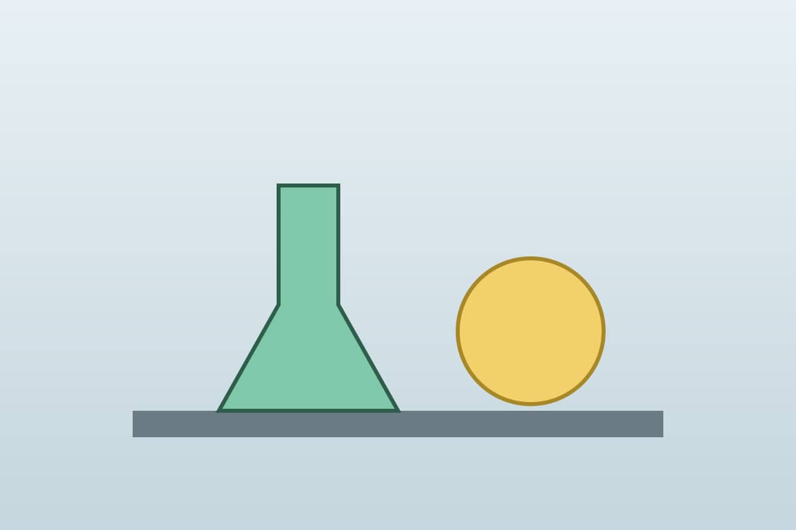

Pupils' solar-powered water filter wins regional science fair
Team from Hollis Road Primary heads to national final in London.

A team of four ten-year-olds from Hollis Road Primary School has won the regional young scientists' fair with a solar-powered water filter built from recycled bottles, sand and a salvaged bicycle pump.
The judges, who included two engineers from the Wren Water Treatment Works, said the entry stood out for its careful testing. The pupils measured the clarity of muddy pond water before and after filtering, repeating each trial five times and plotting the results on a hand-drawn chart.
Teacher Beth Collins said the project began when the class noticed how much plastic was being thrown away at the school canteen. They decided to find a use for it.
We thought, what if the bottles could clean water instead of floating in the sea?
The team will travel to London in March for the national final. A fundraising bake sale on 22 November will help pay for the trip.